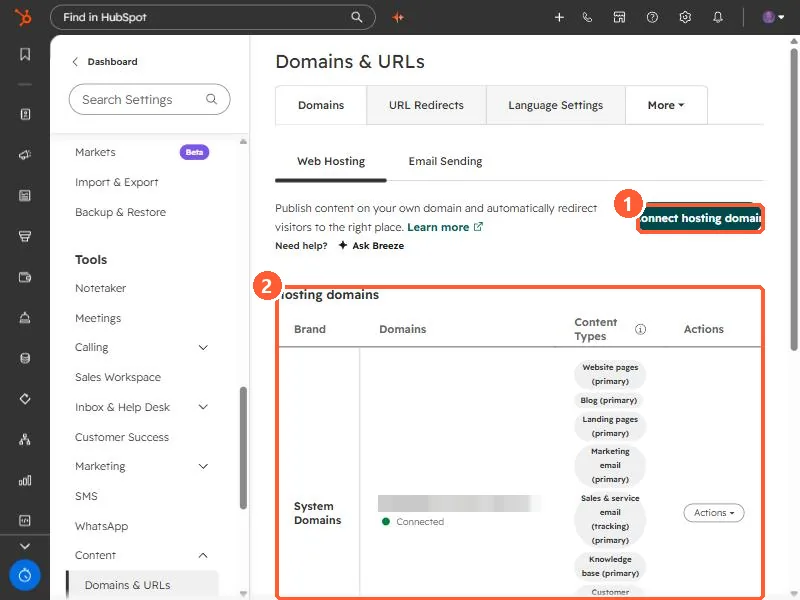
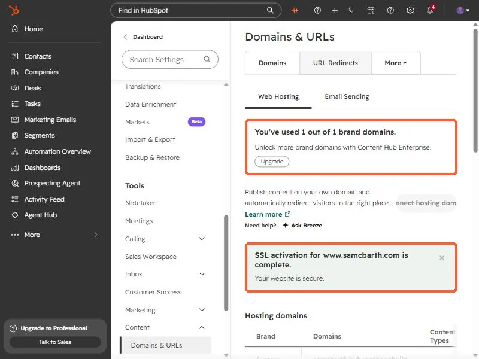

Short answer
Connect a domain under Settings, Content, Domains & URLs and HubSpot provisions a free SAN SSL certificate from Google Trust Services, usually in minutes and at most four hours. It renews itself 30 days before expiry as long as the domain's CNAME still points at HubSpot. If your site already has HTTPS, use pre-provisioning so there is no gap. Your own certificate needs the Custom SSL add-on. A subfolder such as example.com/blog on another platform needs a reverse proxy that you run and support yourself. Changing only the ending (.com to .io) does not need a brand domain replacement: connect the new domain.
1. How domains are counted
Every connected domain is a subdomain, a brand domain and a top-level domain: in blog.example.com those are blog, example and .com. The limit that matters is brand domains.
| Subscription | Brand domains | Subdomains |
|---|---|---|
| Content Hub Professional | 1 | Unlimited on that brand domain, one primary each for website pages, landing pages and blog |
| Content Hub Enterprise | 10, more with the Domain Limit Increase | Unlimited |
| Marketing Hub Professional | 1 | Unlimited for marketing email |
| Marketing Hub Enterprise | 1, more with the Domain Limit Increase or the Brands add-on | Unlimited |
| Service Hub Professional | 1 | One for the knowledge base |
| All other subscriptions | 1 | One custom subdomain |
The Brands add-on gives one brand domain per additional brand. Extra subdomains beyond the primary for each content type connect as secondary domains.
2. Connect a domain
Go to Settings, Content, Domains & URLs and click Connect hosting domain (1). Connected domains are listed below it (2). My demo portal only has the system domain HubSpot gives every account.


HubSpot gives you DNS records to add at your domain provider, usually a CNAME for the subdomain. Add them exactly as shown, then verify.
Subdomain or subfolder? HubSpot hosts content on domains you connect, such as blog.example.com. If the blog has to live at example.com/blog while the main site stays on another platform, that is a reverse proxy (section 5).
3. SSL: what HubSpot does for you
- Certificate: a standard SAN certificate from Google Trust Services, provisioned when you connect the domain. It usually takes a few minutes and can take up to four hours.
- Renewal: automatic, 30 days before expiry, as long as the domain's CNAME still points to HubSpot. Move the DNS elsewhere and renewal fails.
- CAA records: if your domain has CAA records,
pki.googmust be listed or Google cannot issue the certificate. - TLS: HubSpot accepts TLS 1.2 and above. Older clients fail to connect.
I checked a live site hosted on HubSpot's CMS on November 15, 2026. Its certificate was issued by Google Trust Services (WE1) on October 14, 2026 and expires January 12, 2027: a 90-day certificate. The response also carried Strict-Transport-Security: max-age=31536000 and HubSpot's X-HS-Cache-* headers. Short certificates are fine here because renewal is automatic.
The Domains & URLs page shows a notice when SSL is still activating (bottom) next to the brand domain limit (top):


4. Moving a live HTTPS site: pre-provision first
If the domain already serves HTTPS somewhere else, switching the CNAME before HubSpot has a certificate means visitors get a security warning for up to four hours. Pre-provisioning avoids that:
- While connecting the domain, click pre-provisioning in the banner.
- At your DNS provider, add the records from the Pre-provision your SSL certificate dialog, copying the Host and Required Data values.
- Click Verify. It can take up to four hours.
- Only then point the live CNAME at HubSpot.
Do not use the pre-provisioning CNAME as the origin for a reverse proxy. They are different records.
5. Reverse proxy (subfolder on another platform)
A reverse proxy serves HubSpot pages under your main domain's path. HubSpot's developer docs list what the proxy must do:
- Forward to the origin host for your Hub ID and data center, given in HubSpot's setup guide.
- Send
X-Forwarded-Forwith the visitor's IP,X-HubSpot-Trust-Forwarded-For: true, andX-HS-Public-Hostset to your public domain. - Proxy HubSpot's system paths:
/_hcms/*,/hs/*,/hubfs/*,/hs-fs/*,/cs/c/*,/e3t/*and/events/*. - Not cache anything from HubSpot. HubSpot manages its own CDN cache so published changes appear.
- Have its own SSL certificate. If HubSpot shows "Reverse proxy domains need your action to avoid website disruption", add the DCV record it gives you.
Cloudflare's Orange-to-Orange setup needs a Cloudflare Enterprise account, zone hold turned off, and headers set with request header transform rules. HubSpot support does not cover reverse proxies, so someone on your side has to own it.
6. Custom SSL certificate
If you need a specific certificate type or validation level, such as an organization-validated certificate, you need the Custom SSL add-on. You generate a new CSR inside HubSpot and buy the certificate against it. You cannot upload a certificate you already have. Status shows on the Custom SSL tab. Decide the certificate type and validation level before you buy, because the CSR comes from HubSpot.
7. Domain security settings
Each connected domain has security settings in Domains & URLs:
- Require HTTPS: forces every page on the domain to load over HTTPS. Turn it on.
- HSTS: choose a max-age, and optionally Include subdomains and Enable preload. Only use preload if every subdomain of the brand domain, including ones not on HubSpot, serves HTTPS, because preload is hard to undo.
- Other headers: X-Frame-Options, X-XSS-Protection, X-Content-Type-Options, Content-Security-Policy (and Report-Only), Referrer-Policy and Permissions-Policy.
8. Replacing a brand domain
Replacing a brand domain (example.com becomes newname.com) needs the Domain settings permission. Afterwards, check the settings that hold the old domain, such as the blog root URL. HubSpot's KB lists what to update after the replacement. If you are only changing the ending (.com to .io), HubSpot says you do not need a replacement: connect the domain with the new ending.
9. What is changing for 2027
- Certificates get shorter. Under CA/Browser Forum ballot SC-081, public TLS certificates issued since March 15, 2026 last at most 200 days. From March 15, 2027 the maximum is 100 days, and from March 15, 2029 it is 47 days. HubSpot's automatic certificates already renew on their own. The work falls on anything you manage yourself: a Custom SSL certificate, and the certificate on a reverse proxy.
- Keep the CNAME pointed at HubSpot. With renewals every few weeks, a DNS change that breaks the CNAME shows up as an expired certificate much sooner than it used to.
- Check CAA records. If someone adds CAA records for another certificate authority and leaves out
pki.goog, the next renewal fails.
Common questions
My SSL has been "pending" for hours. What do I check?
That the CNAME resolves to the value HubSpot gave you, that any CAA record includes pki.goog, and that you waited the full four hours. If it is still stuck, contact HubSpot support with the domain name.
Can I host my blog at example.com/blog?
Only if example.com is on HubSpot, or with a reverse proxy on the platform that hosts example.com. Otherwise use a subdomain such as blog.example.com.
Can I upload the certificate we already bought?
No. Custom SSL needs a new CSR generated in HubSpot.
We switched DNS providers and the site shows a certificate error.
The new DNS zone is probably missing the CNAME to HubSpot or has an extra CAA record. Fix the record and the certificate renews.
Sources
- HubSpot Knowledge Base: SSL and domain security in HubSpot
- HubSpot Knowledge Base: Understand subscription limits for domains
- HubSpot Knowledge Base: Connect a domain to HubSpot
- HubSpot Knowledge Base: Replace a brand domain
- HubSpot Knowledge Base: Add a custom SSL certificate
- HubSpot developer docs: Reverse proxy support overview
- HubSpot developer docs: Set up a reverse proxy with HubSpot
- CA/Browser Forum: Ballot SC-081v3
- HubSpot Community: Subfolder vs subdomain
- HubSpot Community: SSL provisioning stuck
- HubSpot Community: Reverse proxy tutorial with nginx and CloudFront